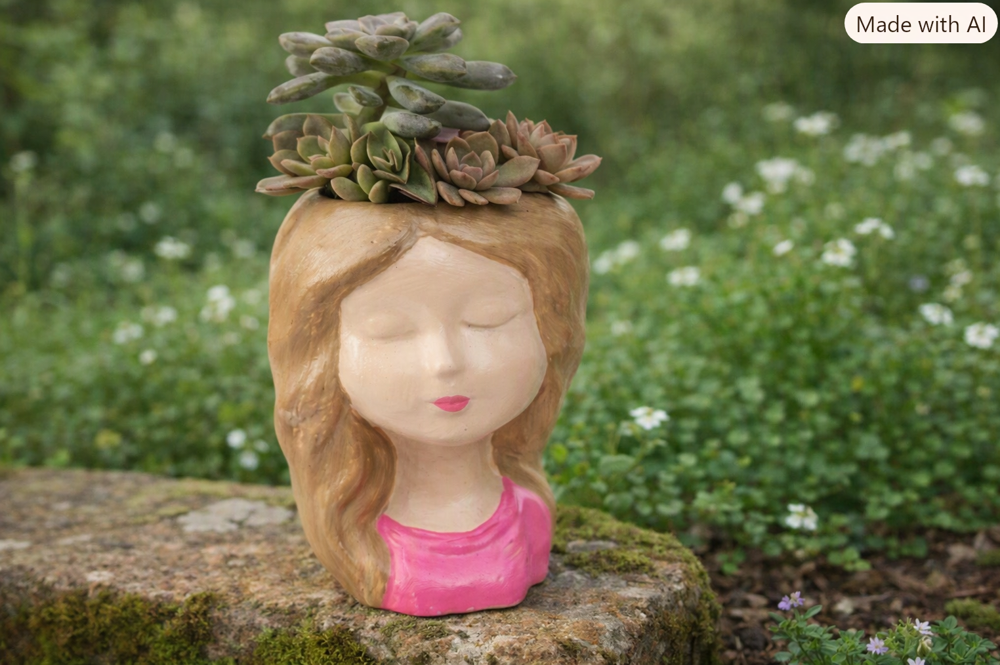
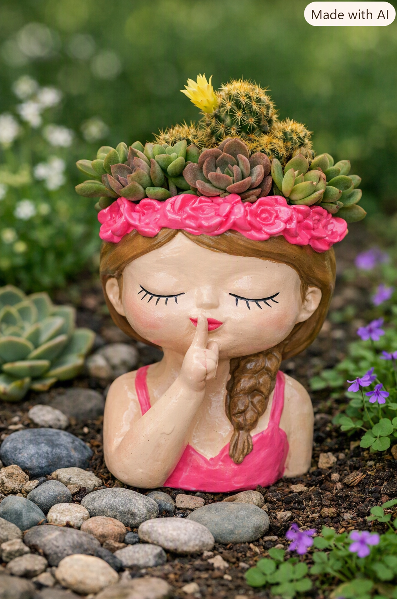
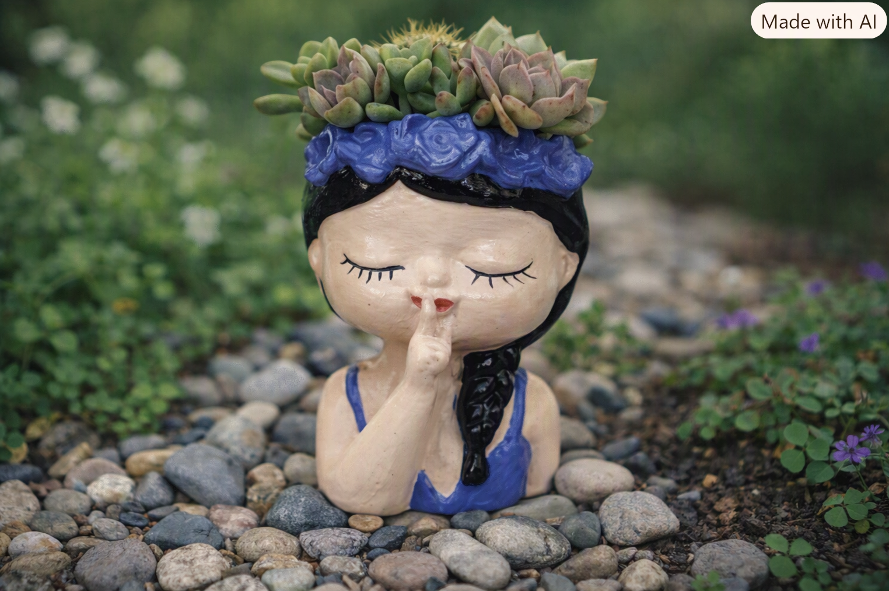
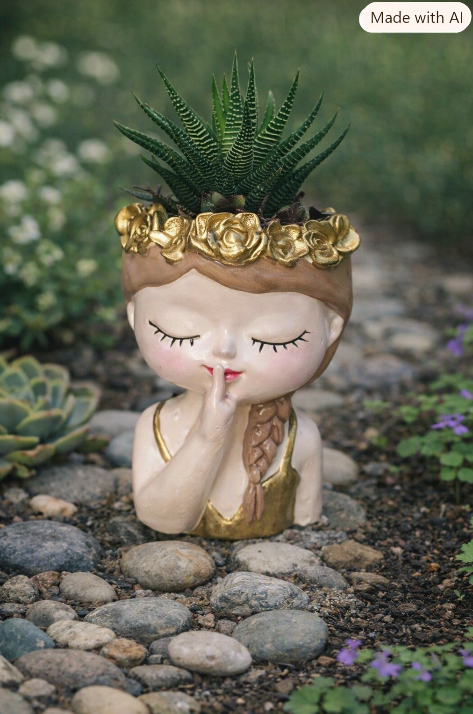
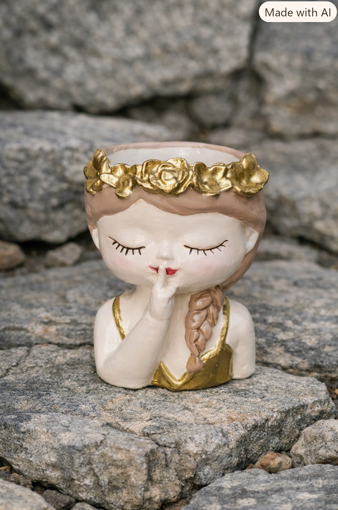

Tierra
Matera rubia serenidad
Acabado rubio y textura natural que aporta calma y luz a cualquier rincón verde.
Colección jardín
Materas hechas a mano por Fabio Ardila en STUDIOS FAAS. Cerámica de barro, texturas naturales y paleta azul y blanca para espacios con carácter.
Selección
Tres piezas con nombre propio, cada una con su tono y temperamento para el jardín.

Acabado rubio y textura natural que aporta calma y luz a cualquier rincón verde.

Relieve que corona su borde: un rosa suave pensado para plantas con protagonismo.

Esmalte azul profundo y sereno. La pieza que baja la voz del paisaje.

Matera con detalles dorados y planta alta en el jardín: barro esmaltado que captura la luz.

Matera dorada vacía sobre piedras rústicas: una pieza que se siente y se muestra.
Escríbenos por WhatsApp y te contamos disponibilidad, medidas y envío a toda Colombia.
Pedir por WhatsApp